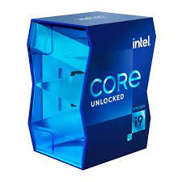

Procesador Intel Core i9-11900K
El Intel Core i9-11900K es un procesador de alta gama de la serie Intel Core de 11ª generación, basado en la arquitectura "Rocket Lake". Tiene múltiples núcleos y subprocesos, así como una alta velocidad de reloj, lo que lo hace adecuado para tareas de alto rendimiento, como juegos y aplicaciones de edición de video.